|
Haihong Xiao I'm a PhD student at South China University of Technology, Department of School of Automation Science and Engineering, supervised by Professor Wenxiong Kang. My research interests lie in 3D Vision, scene representation learning, point cloud processing, and plant phenotyping analysis. I've received the National Scholarship (2024) In 2023-2024, I was a CSC-funded visiting PhD student at Nanyang Technological University, Singapore, supervised by Professor Ying He. My research focused on real-time rendering and geometric learning. Email: hhxiaowv at gmail dot com / CV / Scholar / ORCID / Github |

|
Recent ResearchIn the past five years, my first-authored and co-authored publications are listed below, with * denoting equivalent contribution. |

|
Geometry-Aware 3D Gaussian Representation for Real-Time Rendering of Large-Scale Scenes
Haihong Xiao*, Jianan Zou*, Shuai Xing, Pengcheng Li, Wenxiong Kang IEEE Transactions on Multimedia (TMM), major revision, 2024 We introduce a novel geometry-aware 3DGS method for efficient real-time rendering of large scenes. |
| 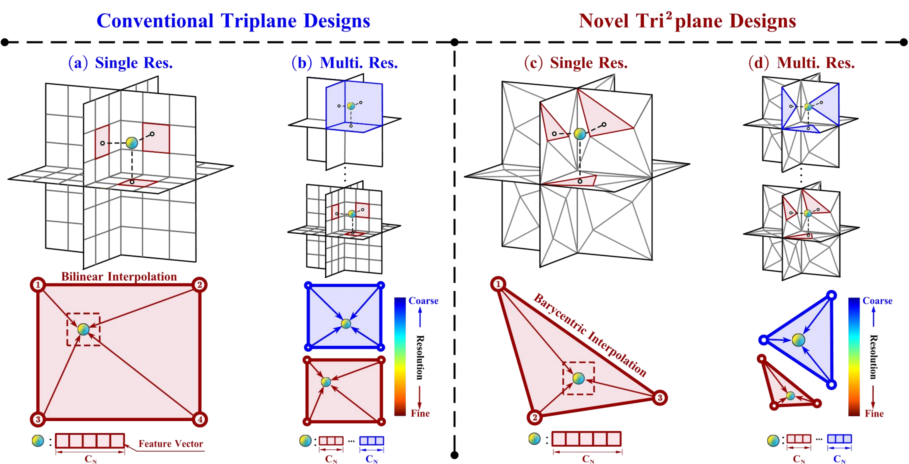 |
Tri2plane: Advancing Neural Implicit Surface Reconstruction for Indoor Scenes
Yiping Xie*, Haihong Xiao*, Wenxiong Kang IEEE Transactions on Multimedia (TMM), major revision, 2024 We introduce a novel triangle-based triplane representation, named (Tri2plane), specifically designed to account for the diverse spatial feature distribution and information density of indoor environments. |
| 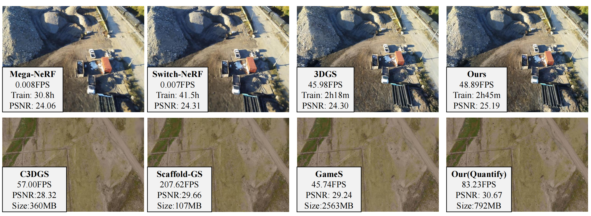 |
EA-3DGS: Efficient and Adaptive 3D Gaussians with Highly Enhanced Quality for outdoor scenes
Jianlin Guo*, Haihong Xiao*, Jianan Zou, Feiqi Deng, Wenxiong Kang IEEE Transactions on Geoscience and Remote Sensing (TGRS), under review, 2024 We propose EA-3DGS, a high-quality real-time rendering method designed for outdoor scenes. |
| 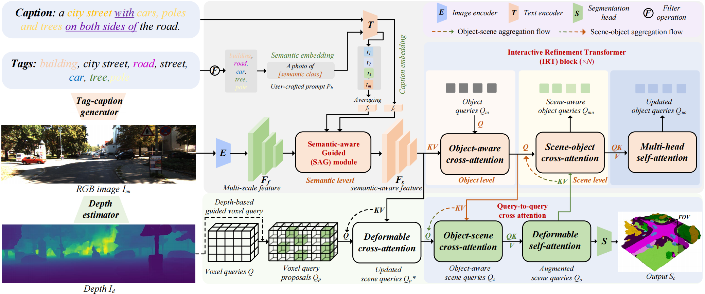 |
Semantic Scene Completion via Semantic-aware Guidance and Interactive Refinement Transformer
Haihong Xiao, Wenxiong Kang, Hao Liu, Yuqiong Li, Ying He IEEE Transactions on Circuits and Systems for Video Technology (TCSVT), minor revision, 2024 This work aimed to mitigate the negative impacts of incorrect voxel query proposals caused by erroneous depth estimates and enhance interactions for positive ones in camera-based semantic scene completion tasks. |
| 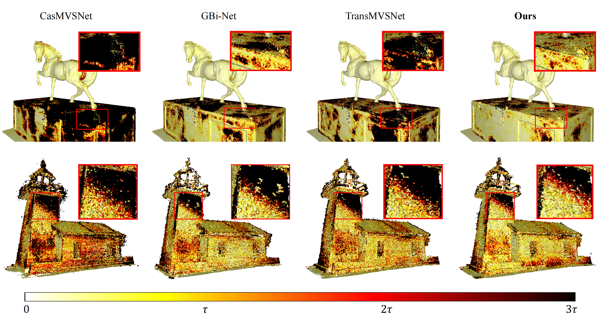 |
EA-MVSNet: Learning Error-Awareness for Enhanced Multi-View Stereo
Wencong Gu*, Haihong Xiao*, Xueyan Zhao, Wenxiong Kang IEEE Transactions on Circuits and Systems for Video Technology (TCSVT), 2024 We present a novel error-aware depth representation that enhances depth prediction accuracy through error-aware learning. |
| 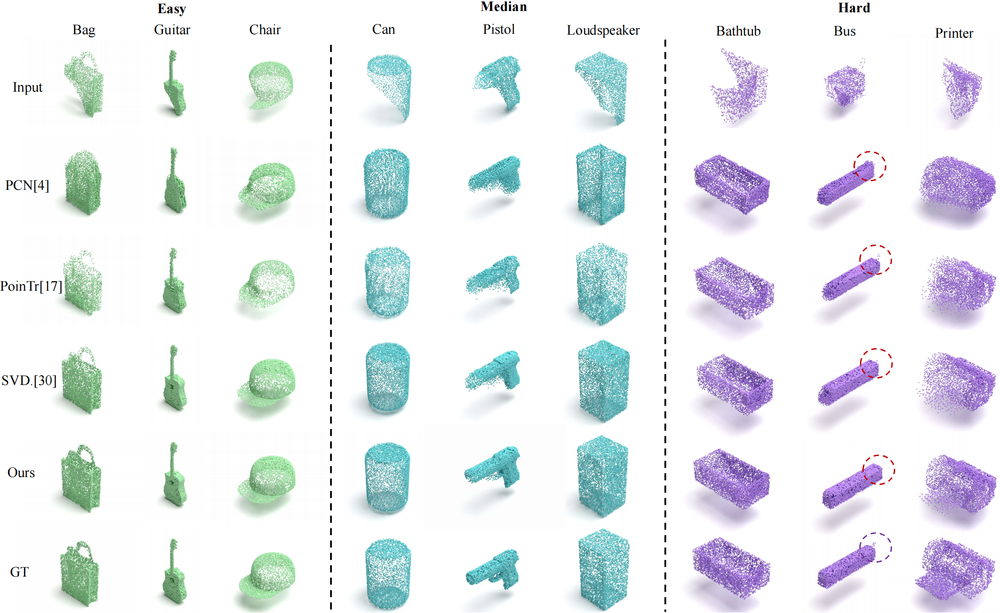 |
Point Cloud Completion via Self-projected View Augmentation and Implicit Field Constraint
Haihong Xiao, Ying He, Hao Liu, Wenxiong Kang, Yuqiong Li IEEE Transactions on Circuits and Systems for Video Technology (TCSVT), 2024 We propose a point cloud completion method that leverages self-projected view augmentation and implicit field constraints. |
| 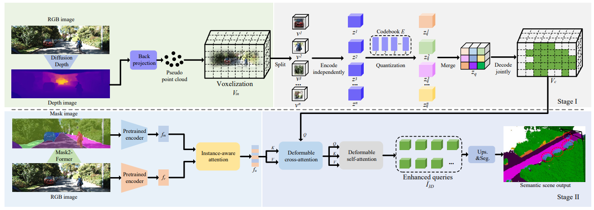 |
Instance-Aware Monocular 3D Semantic Scene Completion
Haihong Xiao, Hongbin Xu, Wenxiong Kang, Yuqiong Li IEEE Transactions on Intelligent Transportation Systems (TITS), 2024 We study outdoor 3D scene understanding, a challenging task demanding the intelligent system to infer both geometry and semantics from a single-view image. |
| 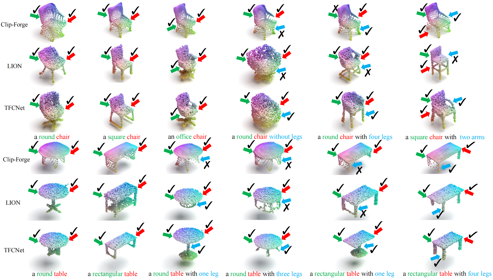 |
Text-Free Controllable 3-D Point Cloud Generation
Haihong Xiao, Wenxiong Kang, Yuqiong Li, Hongbin Xu IEEE Transactions on Instrumentation and Measurement (TIM), 2024 We present TFCNet, a approach for text-free controllable point cloud generation. |
| 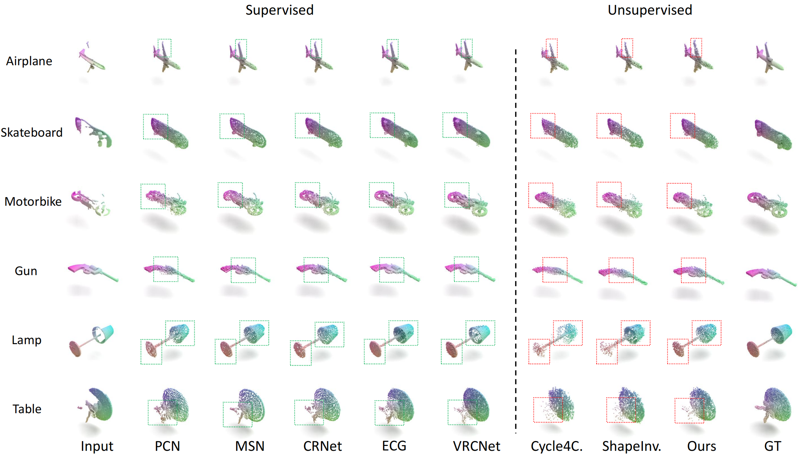 |
Distinguishing and Matching-Aware Unsupervised Point Cloud Completion
Haihong Xiao, Yuqiong Li, Wenxiong Kang, Qiuxia Wu IEEE Transactions on Circuits and Systems for Video Technology (TCSVT), 2023 We propose DMNet, a distinguishing and matching-aware unsupervised point cloud completion network without extensive paired training data. |
| 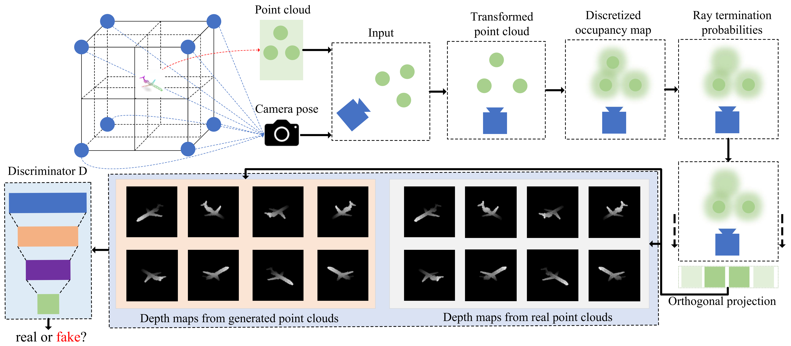 |
Multi-Dimensional Graph Interactional Network for Progressive Point Cloud Completion
Haihong Xiao, Hongbin Xu, Wenxiong Kang, Yuqiong Li IEEE Transactions on Instrumentation and Measurement (TIM), 2023 We design a depth map discriminator combined with differentiable rendering to match the distribution of generated and real point clouds. |
| 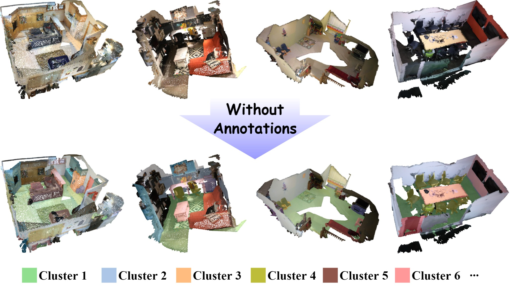 |
PointDC: Unsupervised Semantic Segmentation of 3D Point Clouds via Cross-modal Distillation and Super-Voxel Clustering
Zisheng Chen, Hongbin Xu, Weitao Chen, Zhipeng Zhou, Haihong Xiao, Baigui Sun, Xuansong Xie IEEE/CVF International Conference on Computer Vision (ICCV), 2023 We take the first attempt for fully unsupervised semantic segmentation of point clouds, which aims to delineate semantically meaningful objects without any form of annotations. |
| 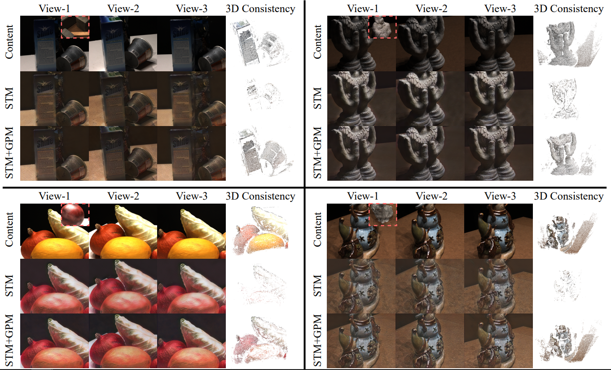 |
Semi-supervised Deep Multi-view Stereo
Hongbin Xu, Weitao Chen, Yang Liu, Zhipeng Zhou, Haihong Xiao, Baigui Sun, Xuansong Xie, Wenxiong Kang Proceedings of the 31st ACM International Conference on Multimedia (ACM MM), 2023 We explore the problem of learning-based MVS in a semi-supervised setting that only a tiny part of the MVS data is attached with dense depth ground truth. |

|
Key techniques for three-dimensional completion: a review
Haihong Xiao, Qiuxia Wu, Yuqiong Li, Wenxiong Kang Optics and Precision Engineering, 2023 The inference of complete 3D shape and semantic scene information from partial observations is crucial for various applications, such as autonomous driving，robotic vision，and metaverse ecosystem construction. |
| 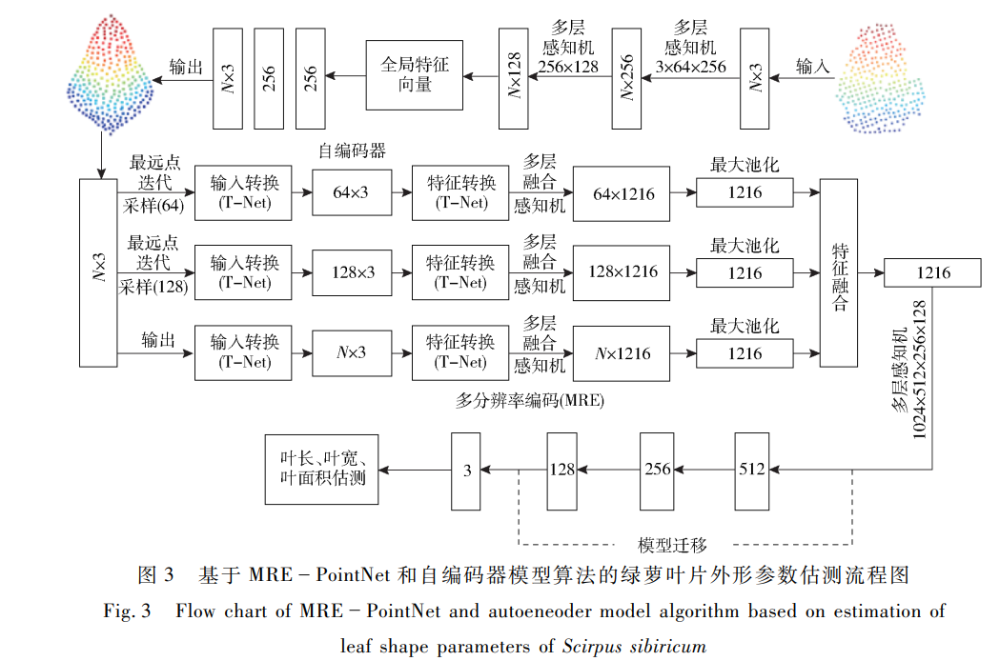 |
Estimation Algorithm of Leaf Shape Parameters of Scirpus sibiricum Based on MRE-PointNet and Autoencoder Model
Haoyun Wang, Haihong Xiao, Shihang Ma, Lin Chen, Jiangbo Wang, Huanliang Xu Trans Chin Soc Agric Mach, 2021 |
| 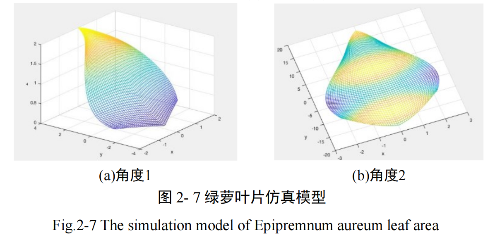 |
Point cloud complementation method of Epipremnum aureum leaves under occlusion conditions based on MSF-PPD network
Haihong Xiao, Huanliang Xu, Shihang Ma, Ling Chen, Jiangbo Wang, Haoyun Wang Trans Chin Soc Agric Mach, 2021 |
| 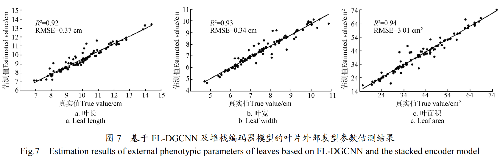 |
Estimation of external phenotypic parameters of Bunting leaves using FL-DGCNN model
Ling Chen, Haoyun Wang, Haihong Xiao, Shihang Ma, Yao Yang, Huanliang Xu Transactions of the Chinese Society of Agricultural Engineering, 2021 |
Miscellanea |
|
Reviewer for IEEE Transactions on Visualization and Computer Graphics
Reviewer for IEEE Transactions on Circuits and Systems for Video Technology Reviewer for ACM International Conference on Multimedia Reviewer for IEEE Internet of Things Journal Reviewer for Pattern Recognition Reviewer for Neural Networks Reviewer for Knowledge-based Systems Reviewer for Neurocomputing Reviewer for Pattern Recognition and Computer Vision |
|
|
National Scholarship, 2024
President's Scholarship, South China University of Technology, 2024 President's Scholarship, South China University of Technology, 2023 Outstanding Graduate Award, Nanjing Agricultural University, 2021 |
|
This webpage template was recycled from Jon Barron. |